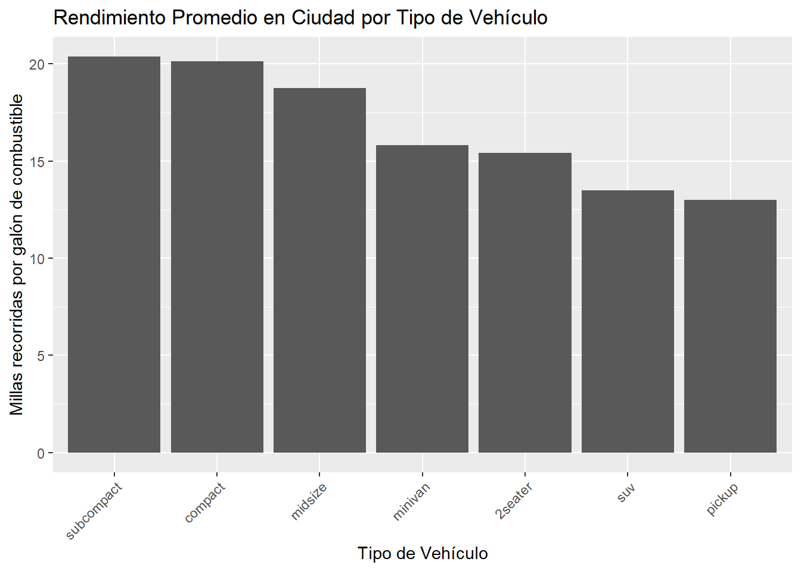

Entrega 2
Este es el repositorio de GitHub en el que se encuentran todos los archivos relacionados con esta entrega.
1) Dibujad un gráfico que permita visualizar el número de vehículos de cada fabricante del conjunto de datos.
2) Dibujad un gráfico para mostrar el rendimiento medio en ciudad para cada clase.
Crearemos un nuevo dataframe con el rendimiento medio en ciudad para cada clase de vehículo. Si pegamos un primer vistazo a la variable clase observamos que tenemos las siguientes clases de vehículos (según si son de 2 plazas, compactos, suv, camionetas u otros).
# A tibble: 7 x 2
class n
<chr> <int>
1 2seater 5
2 compact 47
3 midsize 41
4 minivan 11
5 pickup 33
6 subcompact 35
7 suv 62A continuación agruparemos las entradas del dataset inicial según la clase de vehículo y calcularemos el rendimiento medio por tipo de vehículo.
# A tibble: 7 x 2
class avg_city_mpg
<chr> <dbl>
1 2seater 15.4
2 compact 20.1
3 midsize 18.8
4 minivan 15.8
5 pickup 13
6 subcompact 20.4
7 suv 13.5Finalmente hacemos la gráfica para ilustrar los datos obtenidos:

3) Construid un gráfico para mostrar el rendimiento medio en ciudad para cada clase y tipo de tracción simultáneamente.
En primer lugar agruparemos los vehículos según la clase y tipo de tracción, que puede ser delantera, trasera o cuatro ruedas. Una vez hecho esto se calcula el rendimiento medio de estos.
Para representar los datos cruzados haremos un gráfico de barras apiladas, que es el que hemos visto en clase para representar el cruce de dos variables cualitativas.
`summarise()` has grouped output by 'class'. You can override using the
`.groups` argument.
4) Utilizad un gráfico para mostrar la relación entre el tamaño del motor y el rendimiento en carretera, para cada clase de vehículo. ¿Qué podéis observar?
En primer lugar es necesario comentar que el tamaño (capacidad) del motor lo proporciona la variable “displ” en litros (normalmente se suele dar en centímetros cúbicos pero en este caso nos viene dado en litros). Cruzamos este dato (cuantitativo) con el rendimiento en carretera (otro dato cuantitativo) en la figura siguiente:

Se observa que la nube de puntos sigue una dirección hacia la esquina inferior de la gráfica. Esto significa que, por lo general, los vehículos del dataset cumplen que, a mayor tamaño de motor, menor es el rendimiento que proporcionan en carretera. Además, si nos fijamos en el tipo de vehículo que ocupa el lateral derecho de la gráfica podemos ver que la mayoría son suvs y pickups (camionetas). Ambos son vehículos de mayor peso y envergadura y tiene sentido que den un menor rendimiento (ya que suelen tener un consumo mayor).
5) Comparad la distribución del rendimiento en ciudad para distintos tipos de tracción

Se observa que la distribución de probabilidad de los vehículos de tracción delantera (f) está centrada a la derecha de las otras dos. Como consecuencia de esto, los vehículos de tracción delantera tienen mayor probabilidad de tener un rendimiento superior en ciudad a los de tracción trasera y doble tracción.